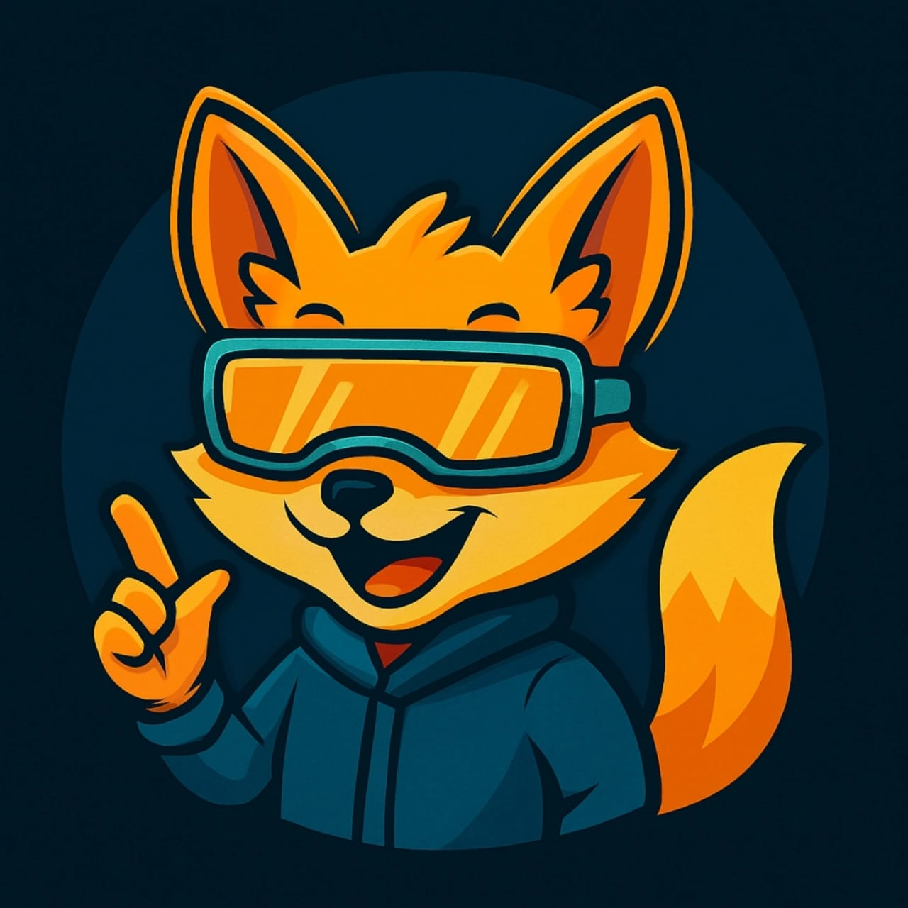

Smart Fox
Agente de IA en tu sitio
Convierte visitas en conversaciones y conversaciones en clientes
Nuestro Agente de IA atiende 24/7: responde preguntas, recomienda productos/servicios, agenda asesorías y recoge tus datos de contacto.
⚡ Respuestas en segundos ·
🔒 Privacidad y seguridad ·
🛠️ Integrable (CRM, WhatsApp, Calendly)